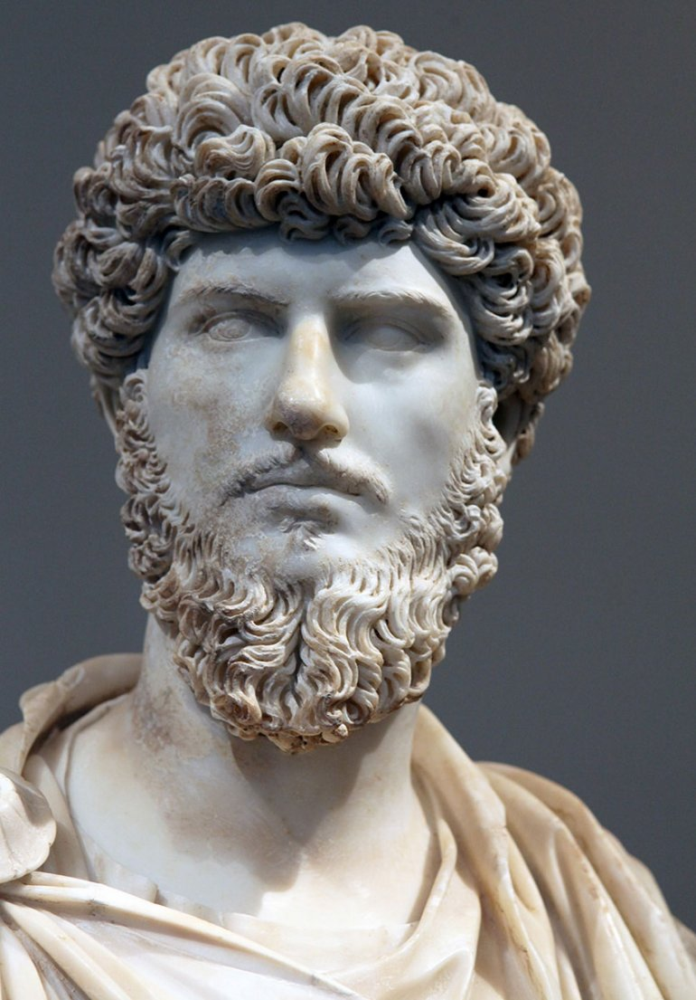

"Наедине с собой"
Марк Аврелий
Описанией
Римский император Марк Аврелий Антонин (121-180) справедливо заслужил прозвище "философа на троне". "Время человеческой жизни - миг. Ее сущность - вечное течение. Ощущение смутно. Тело бренно. Душа неустойчива. Судьба загадочна, Слава недостоверна… Жизнь - борьба и странствие по чужбине. Посмертная слава - забвение. Но что же может вывести на путь?.. Ничто, кроме философии",- это слова одновременно и мудреца, и правителя. Самодисциплина, хладнокровие и мужество не только помогли Марку Аврелию справиться с разочарованием в жизни и мучительным одиночеством, но позволили придать законченную форму учению стоиков и стать влиятельнейшим из философов Древнего Рима. Не обладая воинственным характером, Марк Аврелий всю жизнь вынужден был провести в военных походах. Свои "Размышления" он писал в походной палатке, терзаемый тяжелой болезнью. Эта книга известна также под названием "Наедине с собой" (По свидетельству его врача, знаменитого Галена, последними словами императора были: "Кажется, я уже сегодня останусь наедине с собой"). И хотя Марк Аврелий, подобно многим своим современникам, негативно относился к христианам и поощрял гонения на них, но его этические взгляды, представления о разуме и душе, были близки Учителям Церкви и оказали влияние на христианских мыслителей от блаженного Иеронима до Л. Н. Толстого.
Скачать
- в формате PDF